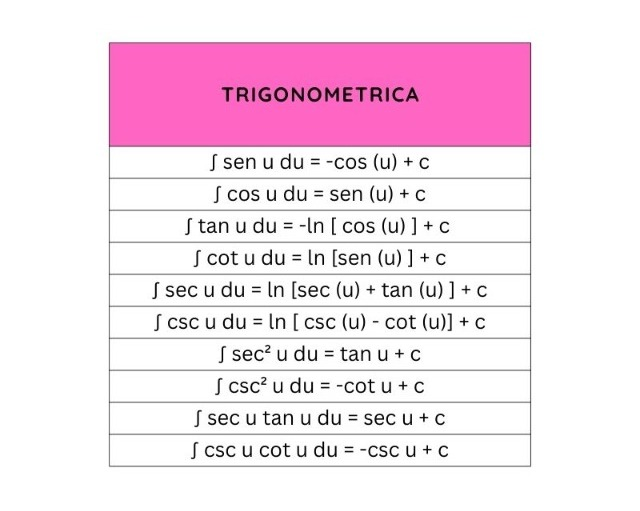
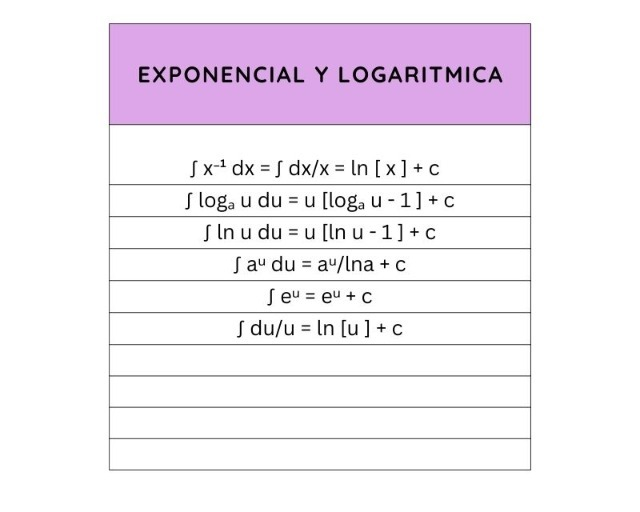
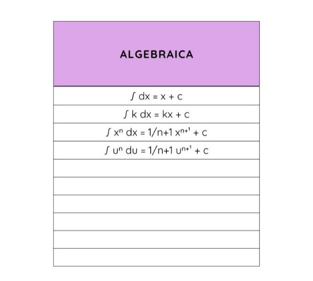

En esta página abordaremos temas comno las formulas, diagramas y unos ejemplos para que puedas apoyarte(TOTALMENTE GRATIS c: )

Formulas Algebraicas
Las fórmulas algebraicas son combinaciones de números, variables y operaciones matemáticas, como la suma, resta, multiplicación y división. Se representan mediante símbolos y letras, donde los números se consideran constantes y las letras representan variables, es decir, valores que pueden variar.


Formulas Trigonometricas
Las funciones trigonométricas se pueden definir como el cociente entre dos lados de un triángulo rectángulo, asociado a sus ángulos


Formulas Exponenciales y Logaritmicas
Función exponencial y función logarítmica Función exponencial es una función cuya ecuación es siendo a > 0 y . La variable independiente x es el exponente. Las imágenes de f(x) son las potencias del número a que es la base. Función logarítmica es una función cuya expresión es , a > 0 y
